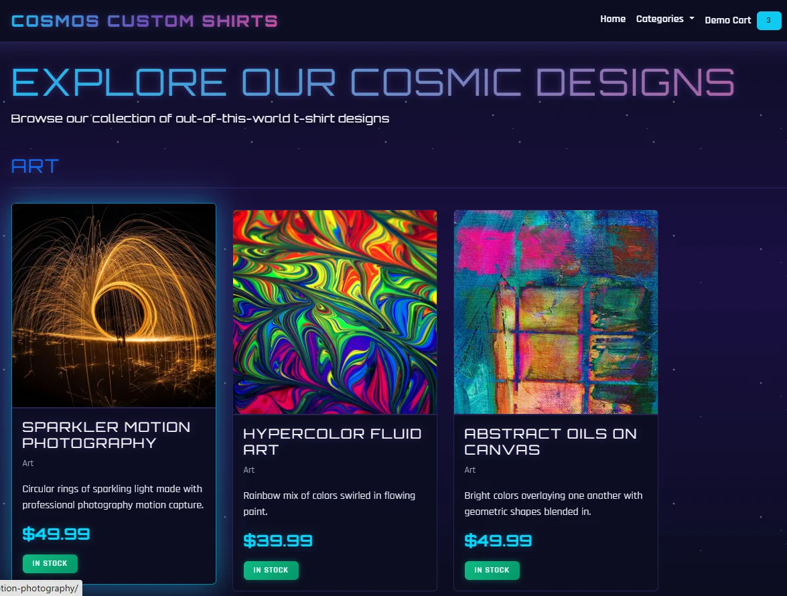
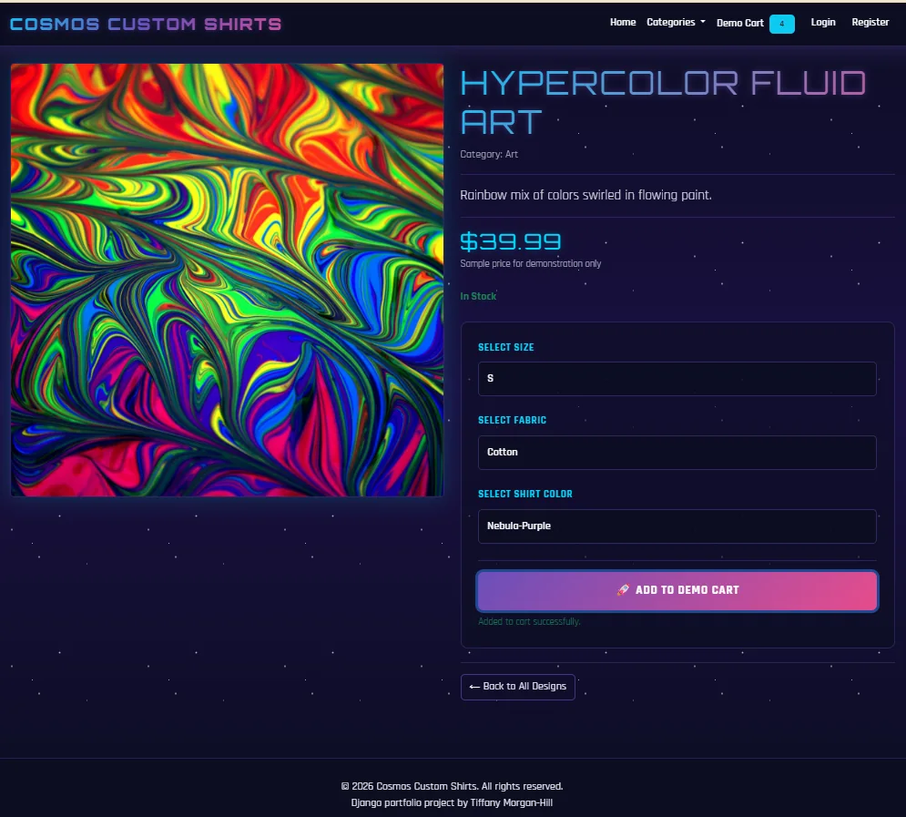
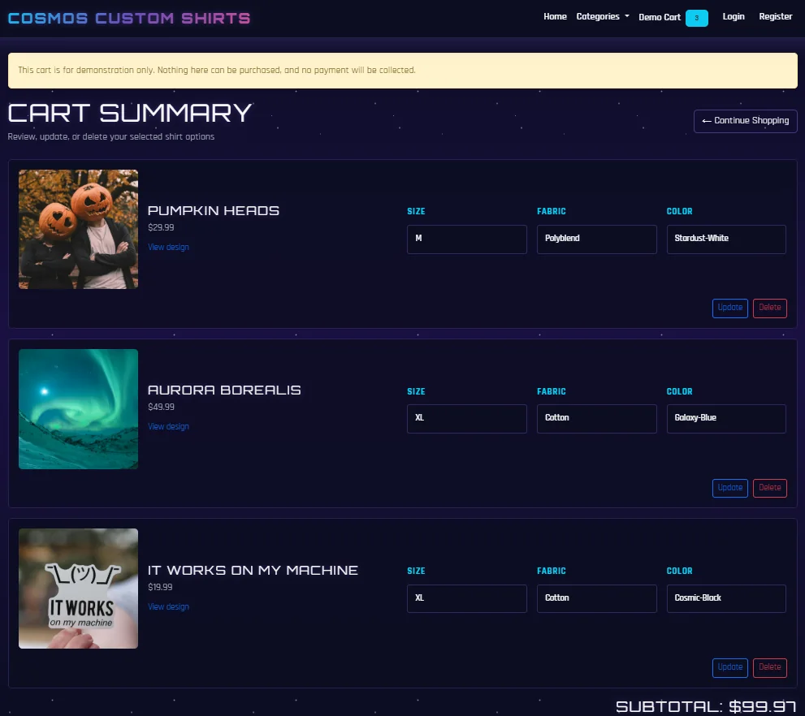

Full-stack commerce case study
Cosmos Custom Shirts
A Django commerce demonstration that combines user accounts, configurable products, cart behavior, catalog administration, and production deployment on AWS.

Project overview
Cosmos Custom Shirts is a full-stack Django demonstration built to explore the systems behind a configurable online catalog. Visitors can browse designs, select product options, create an account, and move configured items through a demo shopping workflow.
The project joins application development with deployment ownership. I implemented the user and commerce flows, prepared the catalog for administrative management, and deployed the application to an AWS EC2 server behind Nginx.
Product configuration
Each product page turns a catalog item into a configured selection. Customers choose a size, fabric, and shirt color before adding the result to the demo cart. Clear stock, price, and confirmation states keep the interaction understandable.
This workflow demonstrates handling related product choices through the interface while retaining the selected variant details for the next step of the shopping journey.

Cart state and editing
The session-based cart retains the configuration for every item rather than treating products as generic entries. Customers can review each combination, change its selections, remove it, and see the updated subtotal.
A visible demonstration notice makes the project's scope clear: the experience exercises commerce behavior without collecting payment or representing a production store.

Production-minded delivery
The application runs on an AWS EC2 instance with Nginx handling web traffic. Hosting the demo myself extended the project beyond framework development into Linux server configuration, domain routing, TLS, and ongoing application availability.
The current address will move from the Orbit Tiff domain to cosmos.aprilhill.tech as part of the portfolio rebrand, without requiring the application itself to move to a different server.
Outcome
A complete demonstration of application logic and deployment ownership.
Cosmos shows the full path from user accounts and catalog data to configurable products, session state, administrative management, and cloud delivery. It demonstrates that I can build an application and also operate the infrastructure that keeps it accessible.
Continue exploring